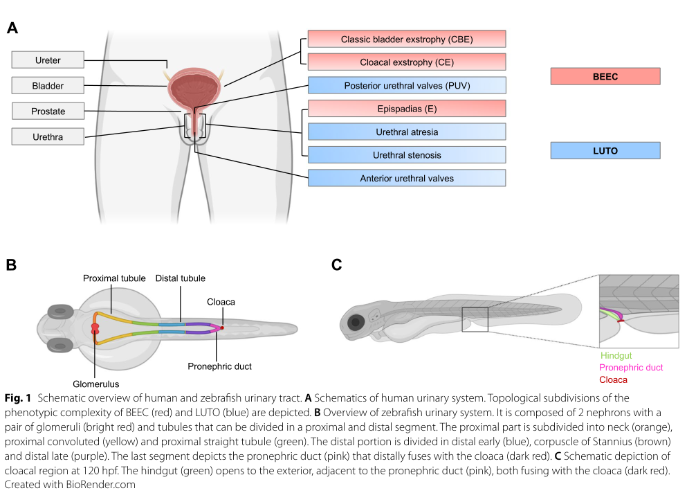

1. Disease Information
1.1 Overview (current understanding)
Exstrophy–Epispadias Complex (EEC), often termed bladder exstrophy–epispadias complex (BEEC), is a congenital spectrum of malformations involving the lower abdominal wall and urinary bladder, with variable involvement of the bony pelvis, external genitalia, and in more severe phenotypes the gastrointestinal tract, anus, spine, and other organs. (brockwell2024pathophysiologyofcongenital pages 8-10, kollges2023exomesurveyand pages 1-2)
The clinical spectrum is commonly ordered by severity as: - Epispadias (E) (mild) - Classic bladder exstrophy (CBE) (intermediate/most common) - Cloacal exstrophy (CE) (most severe; overlaps the OEIS complex concept) (kollges2023exomesurveyand pages 1-2, brockwell2024pathophysiologyofcongenital pages 8-10)
A recent schematic figure shows the BEEC spectrum alongside related lower urinary tract obstruction phenotypes (PUV/atresia/stenosis). (kolvenbach2023modellinghumanlower media da323983)
1.2 Key identifiers
- OMIM / MIM: BEEC; OMIM %600057 (explicitly stated). (kollges2023exomesurveyand pages 1-2)
- MONDO ID: not available in retrieved sources.
- Orphanet ID: not available in retrieved sources.
- ICD‑10/ICD‑11: not available in retrieved sources.
- MeSH: not available in retrieved sources.
1.3 Common synonyms / alternative names
- Exstrophy–epispadias complex (EEC)
- Bladder exstrophy–epispadias complex (BEEC) (brockwell2024pathophysiologyofcongenital pages 8-10, kollges2023exomesurveyand pages 1-2)
- Bladder exstrophy (often used for the CBE phenotype) (brockwell2024pathophysiologyofcongenital pages 8-10)
- Cloacal exstrophy; OEIS complex (omphalocele–exstrophy–imperforate anus–spinal defects) (kollges2023exomesurveyand pages 1-2)
1.4 Evidence source type
The information summarized here is derived from aggregated disease-level resources (reviews, cohort genetics studies, and clinical trials) as well as some case‑based clinical literature. (brockwell2024pathophysiologyofcongenital pages 8-10, kollges2023exomesurveyand pages 1-2, NCT07294612 chunk 1, NCT04935918 chunk 1)
2. Etiology
2.1 Disease causal factors (genetic/developmental)
EEC is primarily a developmental malformation with evidence for a hereditary/genetic component, but no single causal gene explains most cases. The CAKUT review notes a hereditary basis from familial/twin studies while stating that the exact mode of inheritance remains uncertain. (brockwell2024pathophysiologyofcongenital pages 8-10)
A 2023 genetics study summarizes multiple lines of evidence supporting genetic contribution including increased recurrence risk for siblings and offspring and higher concordance in monozygotic twins. (kollges2023exomesurveyand pages 1-2)
Direct abstract quote (2023 genetics, BEEC definition and involvement): - “The bladder exstrophy-epispadias complex (BEEC) is a spectrum of congenital abnormalities that involves the abdominal wall, the bony pelvis, the urinary tract, the external genitalia, and, in severe cases, the gastrointestinal tract as well.” (Köllges et al., 2023, Biomolecules; URL https://doi.org/10.3390/biom13071117; published 2023‑07‑13) (kollges2023exomesurveyand pages 1-2)
2.2 Risk factors
Genetic risk factors (strongest evidence)
- 22q11.21 microduplication: reported as the “strongest associated chromosomal abnormality,” accounting for ~3% of BEEC cases in a 2024 review. (brockwell2024pathophysiologyofcongenital pages 8-10)
- CNV burden: in a cohort of 140 individuals with bladder exstrophy, pathogenic/possibly pathogenic CNVs were found in 16/140 (11.4%), suggesting a meaningful contribution of structural variation for a subset of cases. (nordenskjold2023copynumbervariants pages 11-11)
- Common variant susceptibility: GWAS/meta-analyses implicate loci including ISL1, and review literature highlights significant associations for WNT3, WNT9B, TP63. (brockwell2024pathophysiologyofcongenital pages 8-10, chan2024wholegenomesequencingreveals pages 9-11)
Environmental risk factors
No specific environmental exposures were identified as risk factors in the retrieved sources; thus environmental risk factors are not established in this evidence set.
2.3 Protective factors
No protective genetic or environmental factors were identified in the retrieved sources.
2.4 Gene–environment interactions
No gene–environment interaction evidence was identified in the retrieved sources.
3. Phenotypes
3.1 Phenotypic spectrum and key manifestations
A 2024 review describes BEEC as affecting “the lower urinary tract and surrounding structures, including the abdominal wall, pelvis, genitalia, anus, and spine.” (brockwell2024pathophysiologyofcongenital pages 8-10)
- Epispadias (E): failed closure of urethra with dorsal urethral meatus displacement; often surgically managed early; incontinence can be a long‑term complication. (brockwell2024pathophysiologyofcongenital pages 8-10)
- Bladder exstrophy / CBE: exposed bladder plate through ventral abdominal wall, usually with epispadias; long‑term issues include incontinence and upper tract complications (e.g., hydronephrosis, renal scarring, CKD). (brockwell2024pathophysiologyofcongenital pages 8-10)
- Cloacal exstrophy (CE): abdominal wall defect with exposed bladder and bowel plus pelvic/genital anomalies; associated defects include omphalocele, vertebral defects, imperforate anus, intestinal malrotation/duplication and CAKUT phenotypes such as renal agenesis/ectopia/hydronephrosis. (brockwell2024pathophysiologyofcongenital pages 8-10)
A 2023 genetics paper reports that additional urinary tract anomalies such as ectopic kidney, horseshoe kidney, renal hypoplasia/agenesis, and UPJ obstruction occur in ~1/3 of cases, “mainly in the form of the CE phenotype.” (kollges2023exomesurveyand pages 1-2)
3.2 Suggested HPO terms (examples; not exhaustive)
Because ontology databases were not directly queried in this run, the following are suggested mappings based on clinical descriptions: - Abnormality of the abdominal wall (e.g., abdominal wall defect) (brockwell2024pathophysiologyofcongenital pages 8-10) - Bladder exstrophy (open bladder plate) (brockwell2024pathophysiologyofcongenital pages 8-10) - Epispadias (dorsal urethral meatus) (brockwell2024pathophysiologyofcongenital pages 8-10) - Urinary incontinence (common long‑term issue) (brockwell2024pathophysiologyofcongenital pages 8-10) - Vesicoureteral reflux (post‑surgical risk described) (brockwell2024pathophysiologyofcongenital pages 8-10) - Hydronephrosis, renal scarring, chronic kidney disease (complications) (brockwell2024pathophysiologyofcongenital pages 8-10) - Omphalocele, imperforate anus, vertebral defects / spinal defects (CE/OEIS) (brockwell2024pathophysiologyofcongenital pages 8-10, kollges2023exomesurveyand pages 1-2) - Genital anomalies / impaired sexual function, fertility issues (kollges2023exomesurveyand pages 1-2, song2025neonatalbladderexstrophy pages 3-4)
3.3 Quality-of-life impact
Long‑term quality of life is influenced by repeated surgeries and complications; continence is highlighted as a dominant issue in long‑term management discussions. (song2025neonatalbladderexstrophy pages 3-4)
4. Genetic / Molecular Information
4.1 Genes and loci implicated (human evidence)
Recurrent CNVs and cytogenetic regions
- 22q11.21 / 22q11.2 microduplication: repeatedly associated; review estimate ~3% of cases. (brockwell2024pathophysiologyofcongenital pages 8-10)
- Additional terminal deletions (e.g., 1q, 1p36, 9q34.1) are mentioned as associated chromosomal abnormalities in a review. (brockwell2024pathophysiologyofcongenital pages 8-10)
Candidate genes from exome/CNV and association studies
- LZTR1: 2023 exome survey and resequencing identified a frameshift variant in LZTR1 c.978_985del (p.Ser327fs*6) in an independent CBE male and concluded it further implicates LZTR1. (kollges2023exomesurveyand pages 1-2)
- SLC7A4: frameshift variant c.1087delC (p.Arg363fs*68) reported in an independent CBE male (interpretation varies; VUS discussed in detailed excerpt). (kollges2023exomesurveyand pages 1-2, kollges2023exomesurveyand pages 9-10)
- WNT3 / WNT9B / TP63: highlighted as significantly associated genes in a 2024 CAKUT review (GWAS evidence). (brockwell2024pathophysiologyofcongenital pages 8-10)
- ISL1: replicated susceptibility locus; mechanistic role in genital tubercle development via downstream effects on Fgf10/Wnt5a/Bmp4 is discussed in review; sequencing-based GWAS replication reported OR ~1.62 for a common variant at ISL1 locus. (brockwell2024pathophysiologyofcongenital pages 8-10, chan2024wholegenomesequencingreveals pages 9-11)
- SLC20A1: implicated in urinary tract/urorectal development; zebrafish functional assays show excretory/cloacal phenotypes upon ortholog knockdown. (nordenskjold2023copynumbervariants pages 11-12, kolvenbach2023modellinghumanlower pages 4-6)
4.2 2023–2024 genetic study statistics and findings
- CNV yield (2023 AJMG): In 140 patients with bladder exstrophy, pathogenic/possibly pathogenic CNVs were found in 11.4% (16/140). (nordenskjold2023copynumbervariants pages 11-11)
- Exome survey (2023 Biomolecules): Exome analysis in CE trios reported de novo candidate genes NR1H2, GKAP1, recessive candidates AKR1B10, CLSTN3, NDST4, PLEKHB1, and suggestive UPD involving SVEP1; resequencing in 480 BEEC individuals did not find additional carriers for these genes. (kollges2023exomesurveyand pages 1-2)
- Sequencing-based GWAS (2024 preprint): 97 CBE cases vs 22,037 controls; replication of ISL1 locus and limited evidence for additional loci; authors emphasize contribution of rare and common variants. (chan2024wholegenomesequencingreveals pages 9-11)
4.3 Variant types and functional consequences
- Reported variants include frameshifts/early termination (LZTR1, SLC7A4), and copy number variants (duplications/deletions) impacting multiple developmental pathways (e.g., WNT signaling, Golgi/vesicle trafficking). (kollges2023exomesurveyand pages 1-2, nordenskjold2023copynumbervariants pages 7-8)
4.4 Modifier genes / epigenetics
No modifier‑gene or epigenetic signatures were identified in the retrieved sources.
5. Environment (non-genetic factors)
The retrieved evidence set is largely genetic/developmental and does not identify validated environmental exposures contributing to EEC risk.
6. Mechanism / Pathophysiology
6.1 Embryologic causal chain (upstream → downstream)
A 2024 CAKUT review outlines leading developmental hypotheses: - Upstream developmental defect: abnormal development of the cloacal membrane with failed mesenchymal migration (or insufficient support) (brockwell2024pathophysiologyofcongenital pages 8-10) - Trigger: membrane becomes “prone to rupture” (brockwell2024pathophysiologyofcongenital pages 8-10) - Timing effect: rupture before urorectal septum formation leads to cloacal exstrophy (bowel + bladder herniation), while rupture after abdominal mesenchyme migration but before urethral mesenchyme migration may result in epispadias (brockwell2024pathophysiologyofcongenital pages 8-10) - Alternative upstream model: defect in pelvic ring formation enabling exstrophy (brockwell2024pathophysiologyofcongenital pages 8-10)
6.2 Pathway-level hypotheses and gene links
Evidence supports multiple developmental programs: - Wnt signaling (WNT3/WNT9B) in bladder development; candidate susceptibility loci and functional zebrafish phenotypes for wnt3 knockdown suggest relevance to cloacal/lower outflow structures. (brockwell2024pathophysiologyofcongenital pages 8-10, kolvenbach2023modellinghumanlower pages 4-6) - ISL1 developmental regulation affecting genital tubercle via Fgf10/Wnt5a/Bmp4 (downstream developmental signaling). (brockwell2024pathophysiologyofcongenital pages 8-10) - CNV pathway analyses suggest contributions from WNT signaling, RIT2/POU-family networks, and Golgi/vesicle trafficking (SNARE/Golgi-related genes). (nordenskjold2023copynumbervariants pages 7-8, nordenskjold2023copynumbervariants pages 5-7)
6.3 Suggested GO biological process terms (examples)
- Urogenital system development; urinary bladder development; urethra development
- Mesenchymal cell migration
- Epithelial morphogenesis
- Wnt signaling pathway
- Regulation of apoptosis (developmental tissue remodeling) (Conceptual mapping supported by developmental theories and pathway discussions in the retrieved reviews and CNV network analyses.) (brockwell2024pathophysiologyofcongenital pages 8-10, nordenskjold2023copynumbervariants pages 7-8)
6.4 Suggested cell types (Cell Ontology; examples)
- Mesenchymal cells (migrating mesenchyme supporting cloacal membrane)
- Urothelial cells (bladder plate epithelium)
- Smooth muscle cells (bladder wall differentiation) (Conceptual mapping based on described embryologic processes and bladder development context.) (brockwell2024pathophysiologyofcongenital pages 8-10)
7. Anatomical Structures Affected
7.1 Organ/system level (UBERON examples)
- Urinary bladder, urethra, kidney, ureter (urinary tract) (brockwell2024pathophysiologyofcongenital pages 8-10)
- Abdominal wall (ventral wall defect) (brockwell2024pathophysiologyofcongenital pages 8-10)
- Pelvis / pelvic ring (pubic diastasis concept; pelvic anomalies) (brockwell2024pathophysiologyofcongenital pages 8-10)
- External genitalia (male/female) (brockwell2024pathophysiologyofcongenital pages 8-10, kollges2023exomesurveyand pages 1-2)
- Anus / hindgut / bowel (especially CE) (brockwell2024pathophysiologyofcongenital pages 8-10)
- Spine (CE/OEIS) (brockwell2024pathophysiologyofcongenital pages 8-10, kollges2023exomesurveyand pages 1-2)
7.2 Tissue/cell level and subcellular
The retrieved sources emphasize developmental tissue interactions (mesenchyme support, epithelial closure). No subcellular pathology hallmark is established; however, CNV network interpretation suggests possible involvement of Golgi/vesicle trafficking processes. (nordenskjold2023copynumbervariants pages 7-8, nordenskjold2023copynumbervariants pages 5-7)
8. Temporal Development
8.1 Onset
EEC is congenital, present at birth, and can be suspected prenatally via imaging. (brockwell2024pathophysiologyofcongenital pages 8-10)
8.2 Course / progression
Clinical course is dominated by surgical reconstruction over infancy/childhood and by long‑term functional outcomes (continence, renal health, sexual function) into adolescence/adulthood. (song2025neonatalbladderexstrophy pages 3-4)
9. Inheritance and Population
9.1 Epidemiology (recent summaries)
A 2024 CAKUT review reports these incidence estimates: - Epispadias: 2 per 100,000 births - Bladder exstrophy: 4 per 100,000 births - Cloacal exstrophy: 0.5–1 per 100,000 births (brockwell2024pathophysiologyofcongenital pages 8-10)
A 2023 genetics paper reports: - Epispadias: ~2.4:100,000 births - CBE: 1–2:50,000 births - CE: 0.5–1:200,000 births - Overall birth prevalence in European descent: ~1:10,000 (kollges2023exomesurveyand pages 1-2)
9.2 Sex distribution
- Epispadias and bladder exstrophy: more common in males
- Cloacal exstrophy: more common in females (brockwell2024pathophysiologyofcongenital pages 8-10, kollges2023exomesurveyand pages 1-2)
9.3 Inheritance pattern
The mode is heterogeneous, with evidence supporting a genetic contribution but no single Mendelian pattern for most cases. The 2024 review notes uncertain inheritance mode. (brockwell2024pathophysiologyofcongenital pages 8-10)
10. Diagnostics
10.1 Prenatal imaging
A 2024 case report supports prenatal pathways including targeted prenatal ultrasound and fetal MRI confirmation in suspected fetal bladder exstrophy, used for diagnosis confirmation and multidisciplinary planning. (arlandis2025thinktank2 pages 4-4)
10.2 Postnatal diagnosis
Diagnosis is typically clinical at birth based on the characteristic anatomic presentation (e.g., exposed bladder plate/urethral anomaly). (brockwell2024pathophysiologyofcongenital pages 8-10)
10.3 Genetic testing utility
Given heterogeneity: - Chromosomal microarray / CNV analysis can identify recurrent CNVs and pathogenic/likely pathogenic CNVs in a minority of patients (e.g., 11.4% yield in one cohort). (nordenskjold2023copynumbervariants pages 11-11) - Exome sequencing is used in research/selected clinical contexts (e.g., CE trios), but yields are currently limited and candidate genes often require further functional validation. (kollges2023exomesurveyand pages 1-2)
10.4 Differential diagnosis
Not systematically enumerated in retrieved sources. Practically, differential considerations in prenatal imaging may include other ventral wall defects and urinary tract malformations; BEEC should be considered in the context of cloacal development anomalies. (brockwell2024pathophysiologyofcongenital pages 8-10)
11. Outcome / Prognosis
11.1 Continence outcomes (statistics)
A 2025 case report/review summarizes a large study of 432 CBE patients (median age 14.8 years) reporting: - 23% able to void volitionally through the urethra without catheter/diversion with dry interval ≥3 h (song2025neonatalbladderexstrophy pages 3-4) - Continence rates varied by procedure: BNR alone 64%, and BNC with continent catheterizable stoma 93% (song2025neonatalbladderexstrophy pages 3-4)
In a CPRE cohort example: 33/40 voided but only 5/40 (13%) had volitional continence >2 h; 3/40 (8%) >3 h. (song2025neonatalbladderexstrophy pages 3-4)
11.2 Renal outcomes (statistics)
The same 2025 review reports an adult follow-up cohort (median age 30.1 years) where: - 44% (7/16) had stage II or higher chronic kidney disease - 31% (5/16) had hydronephrosis - 44% (7/16) had bladder calculi - 56% (9/16) had history of pyelonephritis (song2025neonatalbladderexstrophy pages 3-4)
A 2024 review notes that more recent data suggest long-term renal function “may not be as impaired as previously believed,” highlighting ongoing uncertainty and cohort dependence. (brockwell2024pathophysiologyofcongenital pages 8-10)
11.3 Sexual function and fertility
A 2023 genetics paper states both sexes may have impaired sexual function and fertility issues; male fertility may be decreased due to low ejaculate volume and sperm quality. (kollges2023exomesurveyand pages 1-2) A 2025 review summarizes multiple cohorts reporting substantial sexual activity and satisfaction in adulthood after reconstruction, but persistent fertility challenges. (song2025neonatalbladderexstrophy pages 3-4)
12. Treatment
12.1 Standard of care (real-world implementation)
Management is predominantly surgical, typically initiated in infancy and extending across childhood.
A 2025 review states the primary surgical approaches are modern staged repair of exstrophy (MSRE) and complete primary repair of exstrophy (CPRE), with the staged approach including bladder closure within ~72 hours and later staged repairs. (song2025neonatalbladderexstrophy pages 3-4)
Because continence is often not achieved by primary repair alone, additional operations are frequently needed: - Bladder neck reconstruction (BNR) - Augmentation cystoplasty (AC) - Continent catheterizable stoma - Bladder neck closure (BNC) with continent catheterizable stoma (song2025neonatalbladderexstrophy pages 3-4)
12.2 Interventional/experimental therapies (clinical trials)
Two representative contemporary trials: - Adjustable Continence Therapy (ACT) balloons for incontinence in bladder exstrophy/epispadias: primary endpoint is ≥50% reduction in 24‑h pad weight at 6–24 months; includes QoL (PIN‑Q) and safety endpoints. (ClinicalTrials.gov NCT04935918, posted 2021; https://clinicaltrials.gov/study/NCT04935918) (NCT04935918 chunk 1) - Platelet-rich fibrin (PRF) adjunct during primary repair: 20 male children randomized; outcome includes penopubic fistula and wound dehiscence within 6 months. (ClinicalTrials.gov NCT07294612, 2022; https://clinicaltrials.gov/study/NCT07294612) (NCT07294612 chunk 1)
12.3 Suggested MAXO terms (examples)
- Surgical repair of bladder exstrophy / abdominal wall closure
- Bladder neck reconstruction
- Augmentation cystoplasty
- Creation of continent catheterizable urinary stoma
- Continence device implantation (periurethral balloon therapy)
- Use of platelet-rich fibrin as surgical adjunct
13. Prevention
No primary prevention strategies are established in the retrieved sources given congenital/developmental etiology. Secondary prevention focuses on prenatal detection (ultrasound ± fetal MRI) and early specialized referral to optimize postnatal surgical planning. (arlandis2025thinktank2 pages 4-4)
14. Other Species / Natural Disease
No naturally occurring veterinary analogs were identified in the retrieved sources.
15. Model Organisms
15.1 Zebrafish (Danio rerio)
A 2023 mini‑review highlights zebrafish as a practical vertebrate model for testing candidate genes in lower urinary tract malformations, citing advantages such as rapid reproduction and genetic manipulability (Morpholino, CRISPR). (kolvenbach2023modellinghumanlower pages 1-3)
Direct abstract quote (2023 zebrafish review): - “This has recently led to the identification of … WNT3 and SLC20A1 as genes implicated in the pathogenesis of the group of conditions called bladder-exstrophy-epispadias complex (BEEC).” (Kolvenbach et al., 2023, Molecular and Cellular Pediatrics; URL https://doi.org/10.1186/s40348-023-00156-4; published 2023‑03) (kolvenbach2023modellinghumanlower pages 1-3)
Functional phenotypes include: - wnt3 knockdown leading to cloacal defects - slc20a1a knockdown impairing cloacal excretory function and hindgut distension (kolvenbach2023modellinghumanlower pages 4-6)
Limitations: zebrafish lack human genitalia and urinary bladder anatomy, so mammalian models may be needed for some phenotype aspects. (kolvenbach2023modellinghumanlower pages 4-6)
Expert synthesis / analysis (authoritative perspective)
Collectively, the 2023–2024 literature supports that EEC/BEEC is best understood as a multifactorial developmental field defect with contributions from rare structural variation (CNVs), specific recurrent cytogenetic risk (22q11.21 duplication), and polygenic susceptibility loci (e.g., ISL1/WNT pathway genes). (brockwell2024pathophysiologyofcongenital pages 8-10, nordenskjold2023copynumbervariants pages 11-11, chan2024wholegenomesequencingreveals pages 9-11)
Clinically, the field is moving toward (i) better genomic stratification (CMA/exome/genome studies and pathway interpretation), and (ii) improved long‑term functional outcomes through iterative surgical refinements and continence-directed devices/adjuncts that can be evaluated in trials with standardized endpoints (pad weight, PIN‑Q; fistula/dehiscence). (nordenskjold2023copynumbervariants pages 11-11, NCT04935918 chunk 1, NCT07294612 chunk 1)
Key URLs (from retrieved sources)
- Köllges et al. 2023 (Biomolecules): https://doi.org/10.3390/biom13071117 (published 2023‑07‑13) (kollges2023exomesurveyand pages 1-2)
- Nordenskjöld et al. 2023 (Am J Med Genet A): https://doi.org/10.1002/ajmg.a.63031 (published 2023‑11) (nordenskjold2023copynumbervariants pages 11-11)
- Brockwell et al. 2024 (Cells): https://doi.org/10.3390/cells13221866 (published 2024‑11) (brockwell2024pathophysiologyofcongenital pages 8-10)
- Kolvenbach et al. 2023 (Molecular and Cellular Pediatrics): https://doi.org/10.1186/s40348-023-00156-4 (published 2023‑03) (kolvenbach2023modellinghumanlower pages 1-3)
- Chan et al. 2024 (medRxiv preprint): https://doi.org/10.1101/2024.10.10.24315242 (posted 2024‑10) (chan2024wholegenomesequencingreveals pages 9-11)
- Clinical trial NCT04935918: https://clinicaltrials.gov/study/NCT04935918 (NCT04935918 chunk 1)
- Clinical trial NCT07294612: https://clinicaltrials.gov/study/NCT07294612 (NCT07294612 chunk 1)
Evidence gaps / not found in retrieved sources
- MONDO/Orphanet/ICD‑10/ICD‑11/MeSH identifiers for EEC/BEEC
- Robust, population-based global prevalence estimates beyond summarized incidence
- Validated environmental risk/protective factors and gene–environment interactions
- Systematic differential diagnosis criteria and formal diagnostic guidelines
- Comprehensive epigenetic or multi‑omics signatures specific to EEC
(These gaps reflect limitations of the retrieved corpus/tools during this run rather than definitive absence in the broader literature.)
References
-
(kollges2023exomesurveyand pages 1-2): Ricarda Köllges, Jil Stegmann, Sophia Schneider, Lea Waffenschmidt, Julia Fazaal, Katinka Breuer, Alina C. Hilger, Gabriel C. Dworschak, Enrico Mingardo, Wolfgang Rösch, Aybike Hofmann, Claudia Neissner, Anne-Karolin Ebert, Raimund Stein, Nina Younsi, Karin Hirsch-Koch, Eberhard Schmiedeke, Nadine Zwink, Ekkehart Jenetzky, Holger Thiele, Kerstin U. Ludwig, and Heiko Reutter. Exome survey and candidate gene re-sequencing identifies novel exstrophy candidate genes and implicates lztr1 in disease formation. Biomolecules, 13:1117, Jul 2023. URL: https://doi.org/10.3390/biom13071117, doi:10.3390/biom13071117. This article has 2 citations.
-
(kolvenbach2023modellinghumanlower pages 1-3): Caroline M. Kolvenbach, Gabriel C. Dworschak, Johanna M. Rieke, Adrian S. Woolf, Heiko Reutter, Benjamin Odermatt, and Alina C. Hilger. Modelling human lower urinary tract malformations in zebrafish. Molecular and Cellular Pediatrics, Mar 2023. URL: https://doi.org/10.1186/s40348-023-00156-4, doi:10.1186/s40348-023-00156-4. This article has 7 citations.
-
(kolvenbach2023modellinghumanlower media da323983): Caroline M. Kolvenbach, Gabriel C. Dworschak, Johanna M. Rieke, Adrian S. Woolf, Heiko Reutter, Benjamin Odermatt, and Alina C. Hilger. Modelling human lower urinary tract malformations in zebrafish. Molecular and Cellular Pediatrics, Mar 2023. URL: https://doi.org/10.1186/s40348-023-00156-4, doi:10.1186/s40348-023-00156-4. This article has 7 citations.
-
(brockwell2024pathophysiologyofcongenital pages 8-10): Maximilian Brockwell, Sean Hergenrother, Matthew Satariano, Raghav Shah, and Rupesh Raina. Pathophysiology of congenital anomalies of the kidney and urinary tract: a comprehensive review. Cells, 13:1866, Nov 2024. URL: https://doi.org/10.3390/cells13221866, doi:10.3390/cells13221866. This article has 16 citations.
-
(mingardoUnknownyearclassicbladderexstrophy pages 17-22): E Mingardo. Classic bladder exstrophy: identification of genetic markers and characterization of its associated isl1 gene. Unknown journal, Unknown year.
-
(nordenskjold2023copynumbervariants pages 11-11): Agneta Nordenskjöld, Samara Arkani, Maria Pettersson, Johanna Winberg, Jia Cao, Magdalena Fossum, Magnus Anderberg, Gillian Barker, Gundela Holmdahl, and Johanna Lundin. Copy number variants suggest different molecular pathways for the pathogenesis of bladder exstrophy. American Journal of Medical Genetics. Part a, 191:378-390, Nov 2023. URL: https://doi.org/10.1002/ajmg.a.63031, doi:10.1002/ajmg.a.63031. This article has 7 citations and is from a peer-reviewed journal.
-
(nordenskjold2023copynumbervariants pages 11-12): Agneta Nordenskjöld, Samara Arkani, Maria Pettersson, Johanna Winberg, Jia Cao, Magdalena Fossum, Magnus Anderberg, Gillian Barker, Gundela Holmdahl, and Johanna Lundin. Copy number variants suggest different molecular pathways for the pathogenesis of bladder exstrophy. American Journal of Medical Genetics. Part a, 191:378-390, Nov 2023. URL: https://doi.org/10.1002/ajmg.a.63031, doi:10.1002/ajmg.a.63031. This article has 7 citations and is from a peer-reviewed journal.
-
(chan2024wholegenomesequencingreveals pages 9-11): Melanie MY Chan, Omid Sadeghi-Alavijeh, Catalin D Voinescu, Loes FM van der Zanden, Sander Groen in ’t Woud, Michiel F Schreuder, Wout Feitz, Enrico Mingardo, Alina C Hilger, Heiko Reutter, Lisanne M Vendrig, Rik Westland, Horia C Stanescu, Adam P Levine, Detlef Böckenhauer, and Daniel P Gale. Whole-genome sequencing reveals contribution of rare and common variation to structural kidney and urinary tract malformations. MedRxiv, Oct 2024. URL: https://doi.org/10.1101/2024.10.10.24315242, doi:10.1101/2024.10.10.24315242. This article has 0 citations.
-
(kollges2023exomesurveyand pages 9-10): Ricarda Köllges, Jil Stegmann, Sophia Schneider, Lea Waffenschmidt, Julia Fazaal, Katinka Breuer, Alina C. Hilger, Gabriel C. Dworschak, Enrico Mingardo, Wolfgang Rösch, Aybike Hofmann, Claudia Neissner, Anne-Karolin Ebert, Raimund Stein, Nina Younsi, Karin Hirsch-Koch, Eberhard Schmiedeke, Nadine Zwink, Ekkehart Jenetzky, Holger Thiele, Kerstin U. Ludwig, and Heiko Reutter. Exome survey and candidate gene re-sequencing identifies novel exstrophy candidate genes and implicates lztr1 in disease formation. Biomolecules, 13:1117, Jul 2023. URL: https://doi.org/10.3390/biom13071117, doi:10.3390/biom13071117. This article has 2 citations.
-
(kollges2023exomesurveyand pages 7-9): Ricarda Köllges, Jil Stegmann, Sophia Schneider, Lea Waffenschmidt, Julia Fazaal, Katinka Breuer, Alina C. Hilger, Gabriel C. Dworschak, Enrico Mingardo, Wolfgang Rösch, Aybike Hofmann, Claudia Neissner, Anne-Karolin Ebert, Raimund Stein, Nina Younsi, Karin Hirsch-Koch, Eberhard Schmiedeke, Nadine Zwink, Ekkehart Jenetzky, Holger Thiele, Kerstin U. Ludwig, and Heiko Reutter. Exome survey and candidate gene re-sequencing identifies novel exstrophy candidate genes and implicates lztr1 in disease formation. Biomolecules, 13:1117, Jul 2023. URL: https://doi.org/10.3390/biom13071117, doi:10.3390/biom13071117. This article has 2 citations.
-
(kollges2023exomesurveyand pages 2-3): Ricarda Köllges, Jil Stegmann, Sophia Schneider, Lea Waffenschmidt, Julia Fazaal, Katinka Breuer, Alina C. Hilger, Gabriel C. Dworschak, Enrico Mingardo, Wolfgang Rösch, Aybike Hofmann, Claudia Neissner, Anne-Karolin Ebert, Raimund Stein, Nina Younsi, Karin Hirsch-Koch, Eberhard Schmiedeke, Nadine Zwink, Ekkehart Jenetzky, Holger Thiele, Kerstin U. Ludwig, and Heiko Reutter. Exome survey and candidate gene re-sequencing identifies novel exstrophy candidate genes and implicates lztr1 in disease formation. Biomolecules, 13:1117, Jul 2023. URL: https://doi.org/10.3390/biom13071117, doi:10.3390/biom13071117. This article has 2 citations.
-
(nordenskjold2023copynumbervariants pages 7-8): Agneta Nordenskjöld, Samara Arkani, Maria Pettersson, Johanna Winberg, Jia Cao, Magdalena Fossum, Magnus Anderberg, Gillian Barker, Gundela Holmdahl, and Johanna Lundin. Copy number variants suggest different molecular pathways for the pathogenesis of bladder exstrophy. American Journal of Medical Genetics. Part a, 191:378-390, Nov 2023. URL: https://doi.org/10.1002/ajmg.a.63031, doi:10.1002/ajmg.a.63031. This article has 7 citations and is from a peer-reviewed journal.
-
(mingardoUnknownyearclassicbladderexstrophy pages 96-101): E Mingardo. Classic bladder exstrophy: identification of genetic markers and characterization of its associated isl1 gene. Unknown journal, Unknown year.
-
(mingardoUnknownyearclassicbladderexstrophy pages 89-90): E Mingardo. Classic bladder exstrophy: identification of genetic markers and characterization of its associated isl1 gene. Unknown journal, Unknown year.
-
(kolvenbach2023modellinghumanlower pages 4-6): Caroline M. Kolvenbach, Gabriel C. Dworschak, Johanna M. Rieke, Adrian S. Woolf, Heiko Reutter, Benjamin Odermatt, and Alina C. Hilger. Modelling human lower urinary tract malformations in zebrafish. Molecular and Cellular Pediatrics, Mar 2023. URL: https://doi.org/10.1186/s40348-023-00156-4, doi:10.1186/s40348-023-00156-4. This article has 7 citations.
-
(kolvenbach2023modellinghumanlower pages 3-4): Caroline M. Kolvenbach, Gabriel C. Dworschak, Johanna M. Rieke, Adrian S. Woolf, Heiko Reutter, Benjamin Odermatt, and Alina C. Hilger. Modelling human lower urinary tract malformations in zebrafish. Molecular and Cellular Pediatrics, Mar 2023. URL: https://doi.org/10.1186/s40348-023-00156-4, doi:10.1186/s40348-023-00156-4. This article has 7 citations.
-
(NCT07294612 chunk 1): Zafar Abdullaev. Use of Platelet-Rich Fibrin in Bladder Exstrophy Repair. National Children's Medical Center, Uzbekistan. 2022. ClinicalTrials.gov Identifier: NCT07294612
-
(song2025neonatalbladderexstrophy pages 3-4): Yan Song, Ru Yang, and Xiaowen Li. Neonatal bladder exstrophy: a case report and literature review of long-term outcomes. American Journal of Translational Research, 17:6481-6487, Jan 2025. URL: https://doi.org/10.62347/uyra1911, doi:10.62347/uyra1911. This article has 0 citations and is from a peer-reviewed journal.
-
(NCT04935918 chunk 1): EVALUATION OF THE SAFETY AND EFFICACY OF ADJUSTABLE CONTINENCE THERAPY BALLOONS IN BLADDER EXSTROPHY AND INCONTINENT EPISPADIAS PATIENTS. Assistance Publique Hopitaux De Marseille. 2021. ClinicalTrials.gov Identifier: NCT04935918
-
(NCT07294612 chunk 2): Zafar Abdullaev. Use of Platelet-Rich Fibrin in Bladder Exstrophy Repair. National Children's Medical Center, Uzbekistan. 2022. ClinicalTrials.gov Identifier: NCT07294612
-
(nordenskjold2023copynumbervariants pages 5-7): Agneta Nordenskjöld, Samara Arkani, Maria Pettersson, Johanna Winberg, Jia Cao, Magdalena Fossum, Magnus Anderberg, Gillian Barker, Gundela Holmdahl, and Johanna Lundin. Copy number variants suggest different molecular pathways for the pathogenesis of bladder exstrophy. American Journal of Medical Genetics. Part a, 191:378-390, Nov 2023. URL: https://doi.org/10.1002/ajmg.a.63031, doi:10.1002/ajmg.a.63031. This article has 7 citations and is from a peer-reviewed journal.
-
(arlandis2025thinktank2 pages 4-4): S Arlandis, C Fry, M Wyndaele, and A Apostolidis. Think tank 2: how do we precisely define the" high risk bladder" and what. Unknown journal, 2025.
Artifacts
- Edison artifact artifact-00
